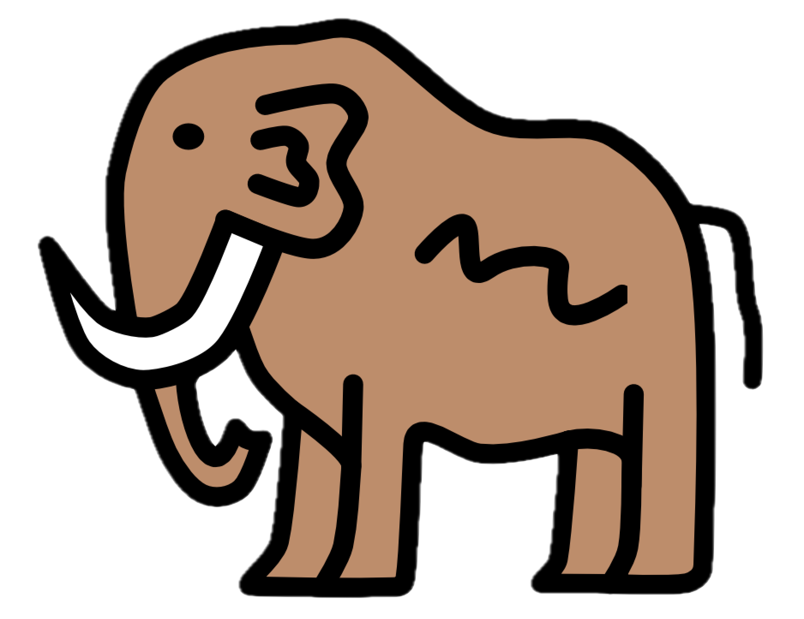

01Live
aRgus
Multilevel variant visualization and advanced prediction score modeling.
Institute of Humangenetics Heidelberg
A shared gateway to web applications and databases developed at the Institute of Humangenetics Heidelberg.
Explore toolsMultilevel variant visualization and advanced prediction score modeling.
Calculate and predict DNA- and protein-level consequences of variants in single-exon genes.

MAMMOTHMulti-omics database for human stem cell-derived cortical neurons modeling Prader-Willi and Schaaf-Yang syndrome.
About this portal
The home of the web applications and databases developed at the Institute of Human Genetics Heidelberg - built to grow with new tools, databases and services.